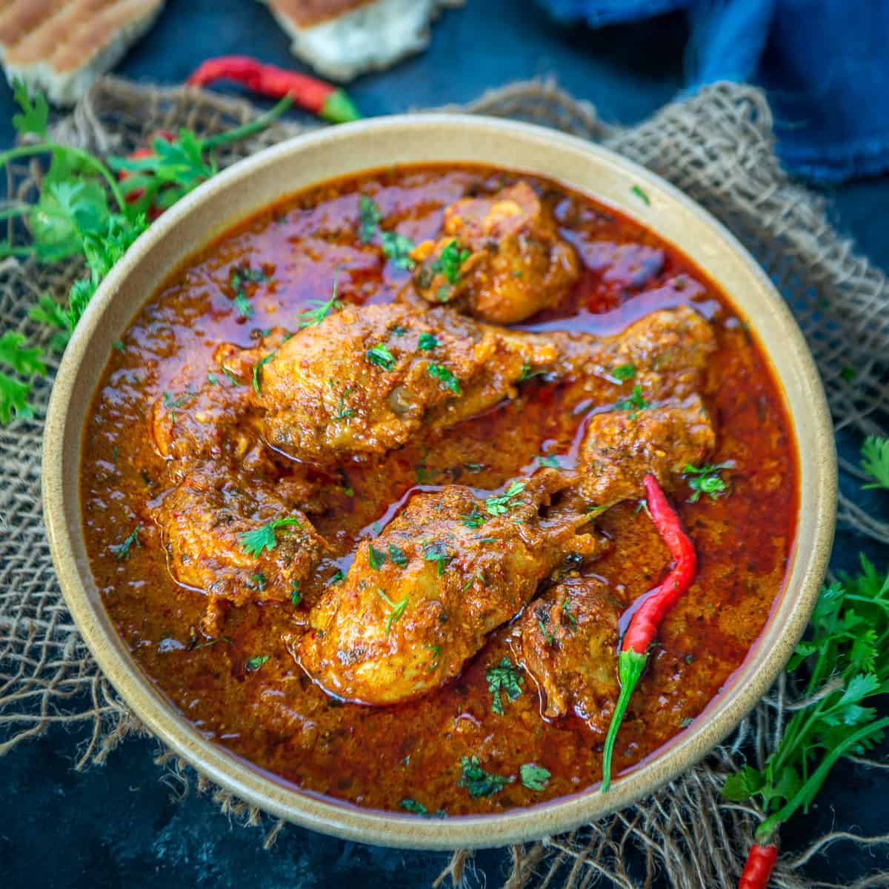

Chicken Curry

Description
Authentic Indian chicken curry is simmered with patience and love. Bone-in meat, Indian ground & whole spices,
ginger-garlic, onion, and tomatoes cooked on low heat until tender.
Chicken curry is super easy to make. Anyone with beginning cooking skills can create a comforting curry.
Ingredients
- 2 pounds whole chicken cut into pieces
- 1 meduim sized onion and 4 tomatos
- 2 tablespoons ginger-garlic paste
- cilantro
- olivr oil
- 1-2 green chillies
- whole spices
- 2 cinnamon sticks
- 4 green cardamom pods
- 4-5 cloves
- 3-4 whole peppercorns
- 2 bay leaves
- Powdered Spices
- 1 ½ teaspoons Kashmiri red chili powder
- ½ teaspoon Garam Masala
- 1 ¼ teaspoons pink salt
Steps
- Puree the tomatoes in a food processor or blender, thinly slice an onion, and grate ginger and garlic.
- Heat a heavy-bottom pan over high heat. Add the oil to the pan. Once the oil starts to heat up, add chopped
onions, whole spices, and ½ teaspoon of salt to the pan. (Salt helps cook onion evenly and dissolves extra
moisture faster.)
- Turn the heat to medium and sauté the onions until golden. It takes about 5 to 8 minutes.
- Once the onion turns golden, add the ginger-garlic paste to it. Sauté ginger-garlic for about 1 minute or
just until you no longer smell the raw ginger-garlic. now add chicken to the pan.
- Add all the ground spices and the rest of the salt. Stir to coat the spices on the chicken. Sauté for about
2-3 minutes.
- Add the tomato puree and sauté for another 2-3 minutes. Turn the heat down to low. Cover the pan and cook
chicken on low for 10 minutes.
- After 10 minutes check for the water consistency in the curry. Add 2 tablespoons to ¼ cup water if needed.
Cover and cook the curry on low for 20 minutes or just until the chicken is tender. Stir once in between
cooking.
- Uncover and add garam masala. Taste test for salt. Add more salt if needed. Simmer extra liquid until it
dissolves or turn the heat off if you prefer to have the curry slightly soupy.
- Garnish with chopped cilantro. Serve with plain rice, naan, or roti(Indian flatbread).